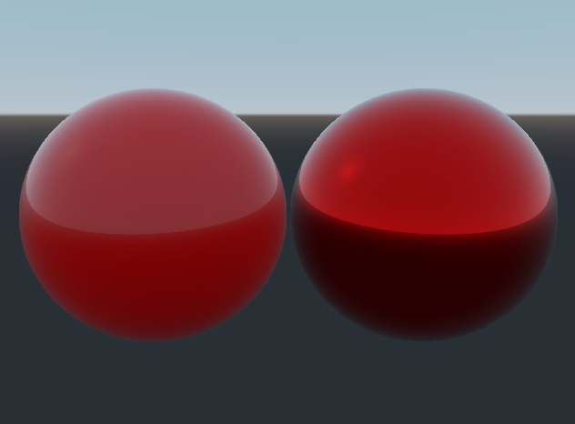

Physically Based Rendering
Introduction
Physically Based Rendering (PBR) is a rendering technique that aims to accurately simulate the physical properties of materials and lights in a scene. It is based on the principles of physics, and uses algorithms to accurately model the way light interacts with different materials.
Physically Based Rendering takes into account the way light is absorbed, reflected, and scattered by various surfaces, such as metal, glass, and plastic. This allows for more realistic and accurate rendering of materials, as well as more accurate lighting effects such as reflections, refractions, and shadows.
Aside from looking better, it also simplifies the workflow of artist since materials are based on physical parameters, which are more intuitive to use and tweak. Another benefit is that using PBR materials makes the look of imported assets more consistent with how they were designed.
For more details on the theory behind PBR, see: https://learnopengl.com/PBR/Theory and https://academy.substance3d.com/courses/the-pbr-guide-part-1 for an in-depth explanation.
Materials and Workflows
To take advantage of Physically Based Rendering, Qt Quick 3D offers three built-in materials: PrincipledMaterial, SpecularGlossyMaterial, and CustomMaterial. Each of these materials provides a different workflow for defining material properties. The choice of which workflow and material to use will depend on the type of material you want to create or the workflow defined by the tool you are using to create the material.
Metallic Roughness Workflow
The Metallic Roughness workflow is a method for implementing Physically Based Rendering that uses two main parameters to represent the appearance of a material: metallic reflectance and surface roughness. The metallic reflectance is a value ranging from 0 (non-metallic) to 1 (fully metallic) that determines how much of the incoming light is reflected by the material and how much is absorbed. The surface roughness is a value ranging from 0 (smooth) to 1 (rough) that determines how rough or smooth the surface of the material appears. The appearance of a material in the Metallic/Roughness workflow is determined by its base color, metallic reflectance, and surface roughness values, which can be stored as textures or constant values.
The base color of the material for the Metallic Roughness workflow contains both the reflected color for non-metals (dielectrics) and the reflectance value for metals.
PrincipledMaterial
The PrincipledMaterial is the primary material that enables the Metallic Roughness workflow in Qt Quick 3D. An example of how to use the PrincipledMaterial is shown below:
import QtQuick import QtQuick3D import QtQuick3D.Helpers Window { visible: true width: 640 height: 480 title: qsTr("PrincipledMaterial") View3D { anchors.fill: parent environment.backgroundMode: SceneEnvironment.SkyBox environment.lightProbe: Texture { textureData: ProceduralSkyTextureData {} } PerspectiveCamera { z: 150 y: 40 eulerRotation.x: -15 } Model { x: -50 source: "#Sphere" materials: [ PrincipledMaterial { baseColor: "red" metalness: 0.0 roughness: 0.1 } ] } Model { x: 50 source: "#Sphere" materials: [ PrincipledMaterial { baseColor: "red" metalness: 1.0 roughness: 0.1 } ] } } }
This example shows two spheres, one with a non-metallic material and one with a metallic material and shows the different meanings that base color has depending on the metalness amount.

In the previous example all of the relevant properties of the Metallic Roughness workflow are defined via a constant value, but they can also be defined using textures. The following example shows how to use textures to define the base color, metallness, and roughness of a material:
import QtQuick import QtQuick3D import QtQuick3D.Helpers Window { visible: true width: 640 height: 480 title: qsTr("PrincipledMaterial with Textures") View3D { anchors.fill: parent environment.backgroundMode: SceneEnvironment.SkyBox environment.lightProbe: Texture { textureData: ProceduralSkyTextureData { } } PerspectiveCamera { z: 150 y: 40 eulerRotation.x: -15 } Model { source: "#Sphere" materials: [ PrincipledMaterial { baseColorMap: Texture { source: "red.png" } metalnessMap: Texture { source: "metalness.png" } roughnessMap: Texture { source: "roughness.png" } } ] } } }
CustomMaterial
While PrincipledMaterial is a very flexible way to create materials, somtimes you may need more control over the material properties. For this, Qt Quick 3D provides the CustomMaterial, which allows you to augment the values used in the Metallic Roughness workflow by adjusting the shader code used by the material.
See Programmable Materials, Effects, Geometry, and Texture data for an introduction to augmenting materials and the built-in PBR lighting system with custom shader code.
Specular and Glossiness Workflow
The Specular/Glossiness workflow is a method for implementing Physically Based Rendering that uses two main parameters to represent the appearance of a material: specular reflectance and glossiness. The specular reflectance is a color value that determines the color and intensity of the specular highlights on the surface of the material. The glossiness is a value ranging from 0 (rough) to 1 (smooth) that determines how rough or smooth the surface of the material appears. In the Specular/Glossiness workflow, the appearance of a material is determined by its albedo, specular reflectance, and glossiness values, which can be stored as textures or constant values. A material with a high specular reflectance and low glossiness will appear more metallic and will have sharp specular highlights, while a material with a low specular reflectance and high glossiness will appear more diffuse and will have soft specular highlights.
SpecularGlossyMaterial
The SpecularGlossyMaterial is the material that enables the Specular/Glossiness in Qt Quick 3D.
More examples
For more examples, see Qt Quick 3D - Principled Material Example and Qt Quick 3D - Custom Materials Example.